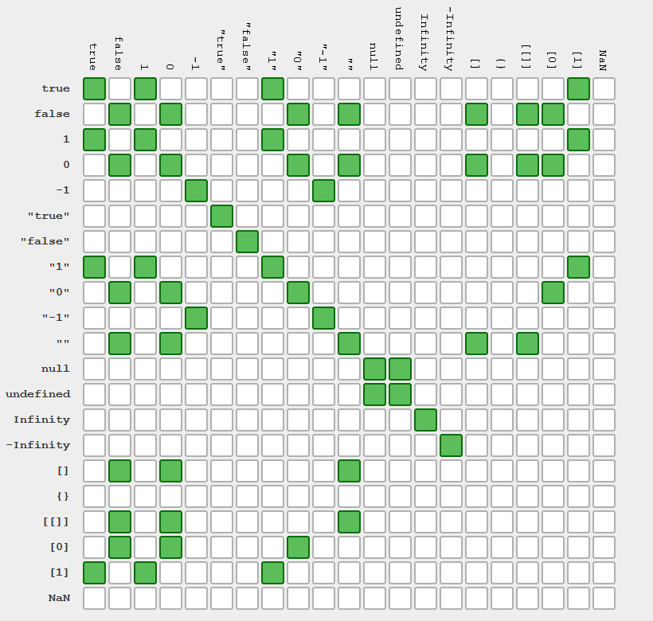

<<назад
Основные операторы
Математические операторы
Назначение, функционал и приоритет (порядок) операций ничем не отличаются от школьного курса алгебры. Операторы возвращают значение как результат выражения.
const x = 10;
const y = 5;
// Сложение
console.log(x + y); // 15
// Вычитание
console.log(x - y); // 5
// Умножение
console.log(x * y); // 50
// Деление
console.log(x / y); // 2
// Остаток от деления
console.log(x % y); // 0
// Сложение с заменой (также есть для всех других операторов)
let value = 5;
// Аналогично записи value = value + 10;
value += 10;
console.log(value); // 15
ИНТЕРЕСНО
Важно запомнить термины составляющих выражения. + - * / % называются операторы, а то, на чем они применяются - операнды.
Операторы сравнения
Используются для сравнения двух значений. Результатом своего выполнения возвращают буль - true или false, то есть «да» или «нет».
- a > b и a < b - больше/меньше
- a >= b и a <= b - больше/меньше или равно
- a == b - равенство
- a != b - неравенство
- a === b - строгое равенство
- a !== b - строгое неравенство
const x = 5;
const y = 10;
const z = 5;
console.log("x > y:", x > y); // false
console.log("x < y:", x < y); // true
console.log("x < z:", x < z); // false
console.log("x <= z:", x <= z); // true
console.log("x === y:", x === y); // false
console.log("x === z:", x === z); // true
console.log("x !== y:", x !== y); // true
console.log("x !== z:", x !== z); // false
Операторы равенства
«Нестрогие» операторы равенства == и != выполняют преобразование типов сравниваемых значений к числу, что может привести к ошибкам, особенно у начинающих.
// ❌ Плохо, выполняется приведение типов
console.log(5 == "5"); // true
console.log(5 != "5"); // false
console.log(1 == true); // true
console.log(1 != true); // false
На следующей иллюстрации показана таблица сравнения значений используя операторы нестрогого равенства.

Поэтому для проверки равенства или неравенства двух значений используются только операторы === (строгое равенство) и !== (строгое неравенство), которые не выполняют приведение типов операндов.
// ✅ Хорошо, приведение типов не выполняется
console.log(5 === "5"); // false
console.log(5 === 5); // true
console.log(5 !== "5"); // true
console.log(5 !== 5); // false
console.log(1 === true); // false
console.log(1 !== true); // true
В таком случае, все равно только себе. Перед оценкой ничего не преобразуется.